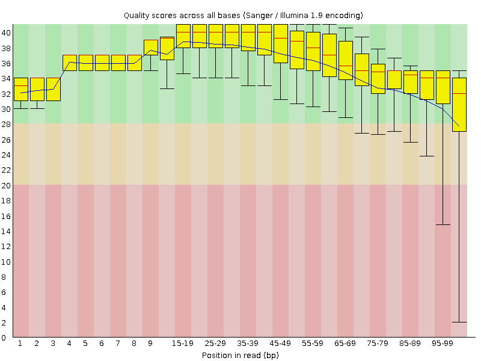
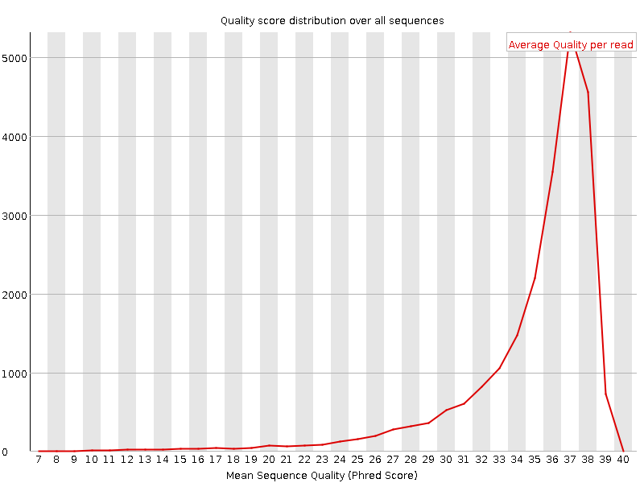
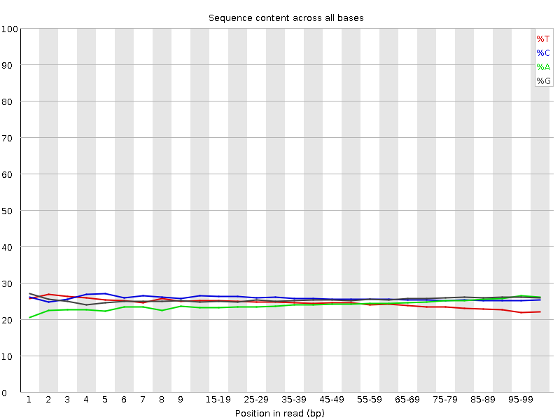
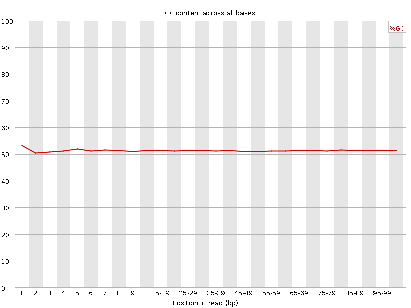
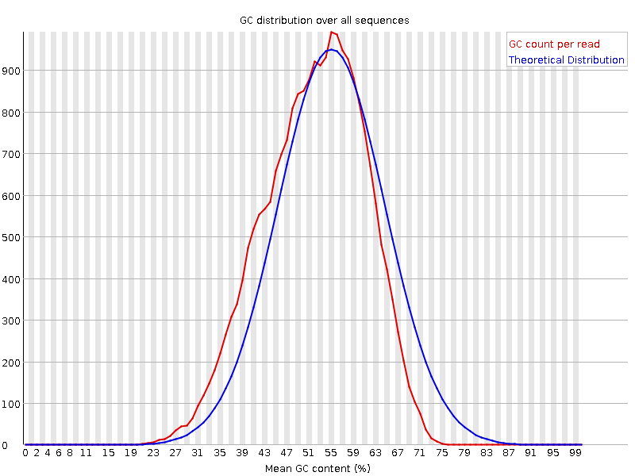
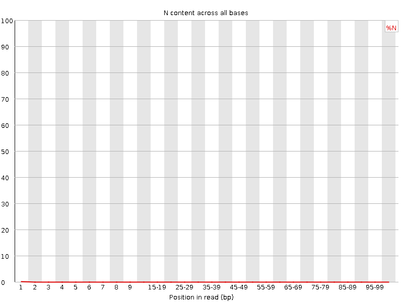
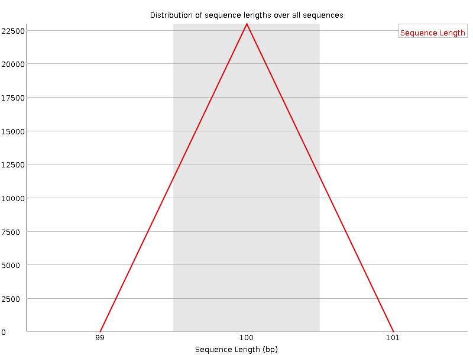
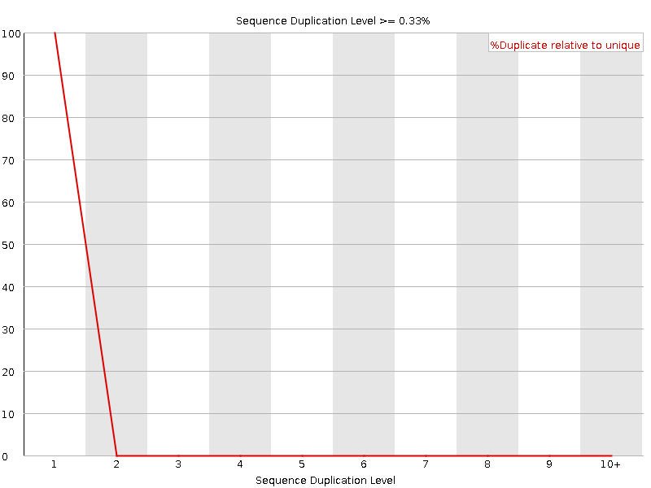
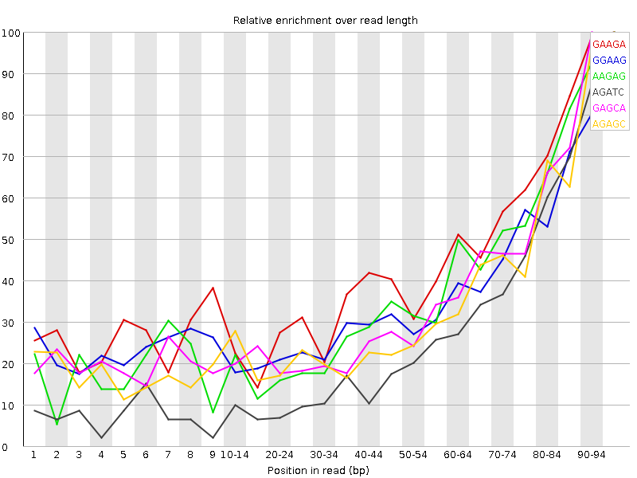

![[OK]](Icons/tick.png) Basic Statistics
Basic Statistics
| Measure | Value |
|---|---|
| Filename | CGRL_index40_R1.fq |
| File type | Conventional base calls |
| Encoding | Sanger / Illumina 1.9 |
| Total Sequences | 22947 |
| Filtered Sequences | 0 |
| Sequence length | 100 |
| %GC | 51 |
Per base sequence quality

Per sequence quality scores

Per base sequence content

Per base GC content

![[WARN]](Icons/warning.png) Per sequence GC content
Per sequence GC content

Per base N content

Sequence Length Distribution

Sequence Duplication Levels

Overrepresented sequences
No overrepresented sequences
Kmer Content

| Sequence | Count | Obs/Exp Overall | Obs/Exp Max | Max Obs/Exp Position |
|---|---|---|---|---|
| GAAGA | 8425 | 3.9497142 | 8.775763 | 95-96 |
| GGAAG | 8170 | 3.6776512 | 9.830698 | 95-96 |
| AAGAG | 6745 | 3.162115 | 8.100702 | 95-96 |
| AGATC | 6265 | 2.9702313 | 10.353926 | 95-96 |
| GAGCA | 6045 | 2.6992054 | 7.2498856 | 90-94 |
| AGAGC | 5990 | 2.674647 | 7.501225 | 95-96 |
| AGCAC | 5470 | 2.4228034 | 7.0156717 | 95-96 |
| CTGAA | 5030 | 2.384719 | 5.006294 | 95-96 |
| TCTGA | 4820 | 2.3296921 | 5.3401585 | 90-94 |
| GCACA | 5195 | 2.3009984 | 7.759757 | 95-96 |
| CACAC | 5165 | 2.269302 | 6.326561 | 95-96 |
| GATCG | 4560 | 2.0758064 | 8.084407 | 95-96 |
| TCGGA | 4550 | 2.071254 | 8.412153 | 95-96 |
| CGGAA | 4535 | 2.0249624 | 7.9298663 | 95-96 |
| ATCGG | 4400 | 2.002971 | 8.084407 | 95-96 |
| TGAAC | 3455 | 1.6380126 | 5.347632 | 95-96 |
| CACGT | 3220 | 1.4540155 | 5.2017426 | 95-96 |
| ACACG | 2990 | 1.3243477 | 5.208605 | 95-96 |
| ACGTC | 2720 | 1.2282367 | 5.0933733 | 95-96 |